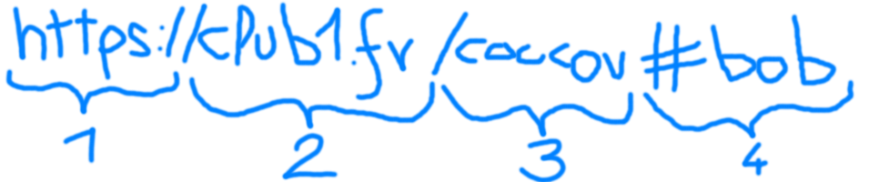

quatrième de couverture
Ce livret tente de fournir quelques pistes de navigation. Poue un
Auteur·e·s
- personne 1
- personne 2
- personne 3

License Creative Commons CC BY 4.0
Illustrations Copyright XXXX
Édition 2023
Quelques outils qu'on vous recommande
Firefox est un navigateur Web édité par Mozilla.
De base, il offre une bonne protection contre le tracking via les cookies en les isolants.
Il peut être encore plus strict et complètementement les refuser via réglages > désactiver les cook's.
mozilla.org/fr/firefox/
Bloqueur de publicité et autres trackers, votre meilleur allié sur les pages web incertaines.
Il peut aussi être utile pour bloquer le Javascript.
ublockorigin.com
Moteur de recherche qui ne piste pas les données. Il dispose de carte.
Le Web, (diminutif de World Wide Web), est souvent confondu avec internet. En réalité, le Web est une sous partie d'internet !
Internet comprend tout les types d'échanges comme les transferts d'argent, jeux vidéo en ligne, messageries instantanées. Tandis que le Web, c'est tout ce qu'on explore depuis un naviguateur Web (comme Firefox ou Chrome), les pages sur lesquels ont est sensés surfer.
Chaqune des pages web disposent d'une adresse qu'on appelle parfois URL.
HTTPS
Ce qui est logique car c'est le protocle du web.
le "S" garanti que les données échangées avec le site web sont protégées.
.fr, .com ou .org.
Ils indiquent en quelques sorte le "site" sur lequel on se trouve.
Ils peuvent avoir des sous-parties qu'on appelle sous-domaines.
Elles se situent juste avant et sont séparées par des points.
Par exemple : finance.gouv.fr est un sous-site qui appartient toujours à gouv.fr.
# sert à pointer vers une partie de la page web,
souvent un titre.
C'est utile pour partager un paragraphe en particulier sur les longues pages.
Le web, c'est un tissus de liens entre pages de sites, c'est de là que vient le rapprochement avec la toile d'arraignée (web). On appelle ces liens des liens hypertexte.
Dans votre navigateur, il est possible de savoir où mène un lien avant de le suivre. Sur PC, en le survolant avec la souris, cela est indiqué en bas de l'écran. Sur téléphone, en restant appuyé dessus.
Les moteurs de recherche sont une des façon d'explorer le labyrinthe qu'est le web. Leur but de fournir un annuaire. Pour cela, ils ont des programmes qui explorent constamment le web, en suivant tout les liens qu'ils trouvent et en indexant toutes les pages.
On appelle le Deep Web,
l'ensemble des pages qui ne sont pas dans les annuaires des moteurs de recherche.
Le Dark web, c'est une couche supplémentaire de protection des informations.
Pour y accèder il faut un navigateur spécifique qui s'appelle Tor Browser.
Pourquoi passer par google alors qu'on sait qu'on veut une page wikipedia ?
En tapant @wikipedia dans la barre de recherche,
on effecture directement une recherche sur ce site.
Quelques adresse qu'on aime bien
archive.org/web
Parfois les sites meurent.
Lorsqu'un site à disparu, si on a son URL, il est souvent possible d'en retrouver
grâce à la machine à remonter dans le temps de Archive.org. -
invidious.fdn.fr
Permet de regarder Youtube à travers un filtre.
motherfuckingwebsite.com
Traité de design web
guide.boum.orgCe livret tente de fournir quelques pistes de navigation. Poue un
License Creative Commons CC BY 4.0
Illustrations Copyright XXXX